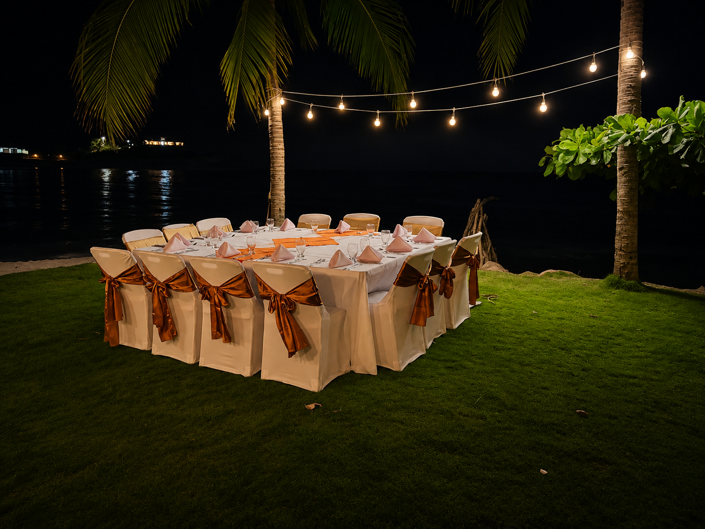
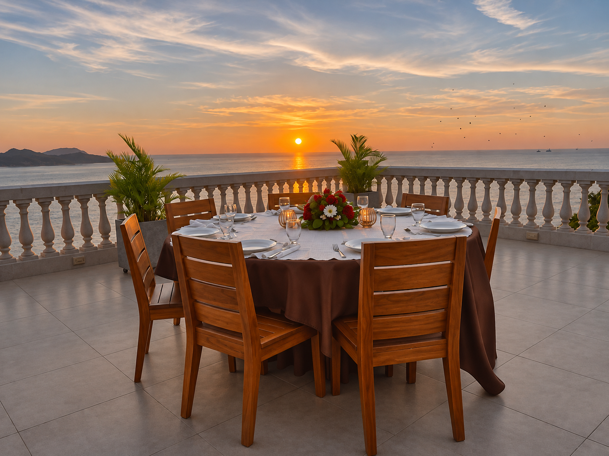
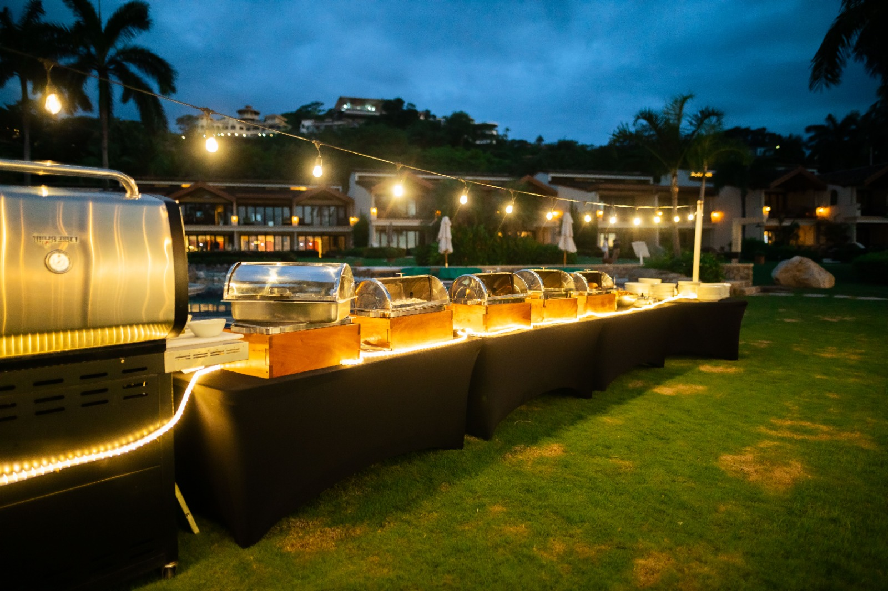
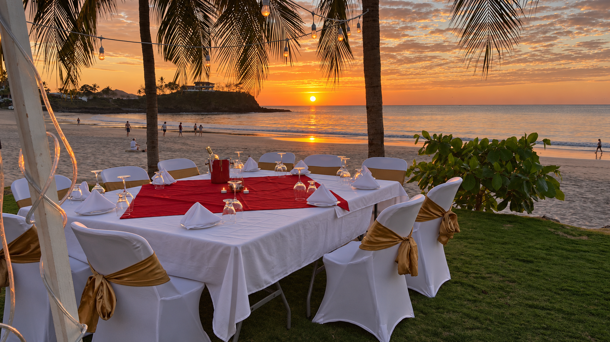

Golden hour
Beachside dinners
Sunset, sea air, and a beautifully served meal without missing a moment of the view.
Personalized with passion and precision
From intimate dinners to full-scale celebrations, Leo’s team makes room for you to enjoy every moment.
Catered to your choices
No gathering is too formal or relaxed, too intimate or expansive. Indoors or outdoors, every experience is shaped around your setting, style, and appetite.

Golden hour
Sunset, sea air, and a beautifully served meal without missing a moment of the view.

At your place
A restaurant-caliber experience brought directly to your vacation home or private residence.

Gather together
Weddings, anniversaries, birthdays, holidays, and milestones planned with care.
More ways to gather
Birthdays, anniversaries, weddings, and life’s milestones become easier to enjoy when Leo’s team handles the meal, setup, service, and cleanup.
Holiday gatherings and New Year celebrations receive the same thoughtful planning, polished presentation, and personalized menu attention.
Let Leo take meal planning off your plate with flexible breakfast, lunch, dinner, and refreshment service for working groups and wellness stays.
Whether it’s a sunset dinner on the beach, a terrace table at twilight, or a casual spread in your home kitchen, no delicious detail is spared.
Peacefully private or gala grande, indoors or outdoors, Leo’s team can adapt the setting, service style, and cuisine to suit your gathering.
Where Leo serves
Leo’s Catering is based in Matapalo, Santa Cruz, and brings private chef and catering experiences to Costa Rica’s North Pacific Gold Coast.
Depending on the date and event, service may be available in the destinations below and nearby communities. Share your exact villa, beach, or venue location so Leo can confirm availability and any travel details.
Frequently asked questions
Leo’s Catering is based in Matapalo, Santa Cruz, and serves Costa Rica’s North Pacific Gold Coast. Depending on the date and event, service may be available in Tamarindo, Playa Flamingo, Playa Conchal, Brasilito, Potrero, Las Catalinas, Hacienda Pinilla, Santa Cruz, and nearby Guanacaste communities. Leo confirms location, availability, and any travel details for every inquiry.
Experiences may include private breakfasts, lunches, multi-course dinners, beachside dining, villa dining, barbecues, weddings, birthdays, anniversaries, retreats, holiday gatherings, and catered events.
Yes. Leo can bring a private dining experience to many villas, vacation rentals, and private residences. Please share the property location and any available kitchen or equipment information when you inquire.
Menus can often be adapted for allergies, dietary needs, children, and personal preferences when those details are shared in advance. Leo will confirm what can be safely accommodated for the selected menu and location.
Service can include menu planning, ingredient sourcing, preparation, cooking, table setup, service, and cleanup. The exact inclusions depend on the event and are confirmed with each proposal.
Reserve as early as possible, especially for holidays, weddings, and larger groups. Short-notice requests are still welcome when Leo’s schedule allows.
Minimum guest counts vary by menu, location, and service style. Include your estimated group size in the inquiry so Leo can recommend the best options.
Send an inquiry with your preferred date, location, number of guests, type of occasion, and any menu or dietary preferences. Leo will follow up to confirm availability and discuss the details.
Send an inquiryOur gift is your freedom
Leo’s team can coordinate menu planning, preparation, table setup, service, and cleanup. Availability and specific inclusions are confirmed for each event.
Start planning